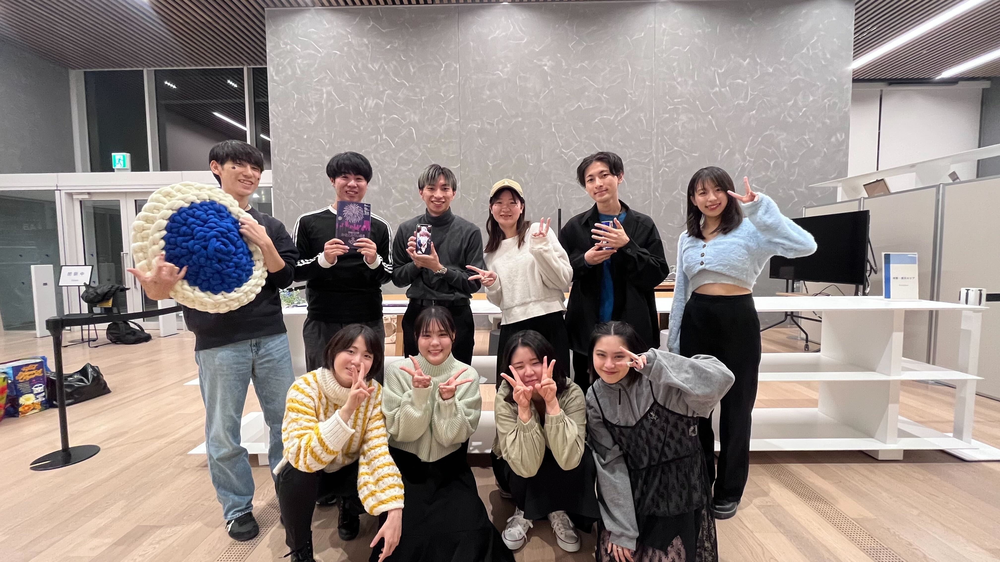
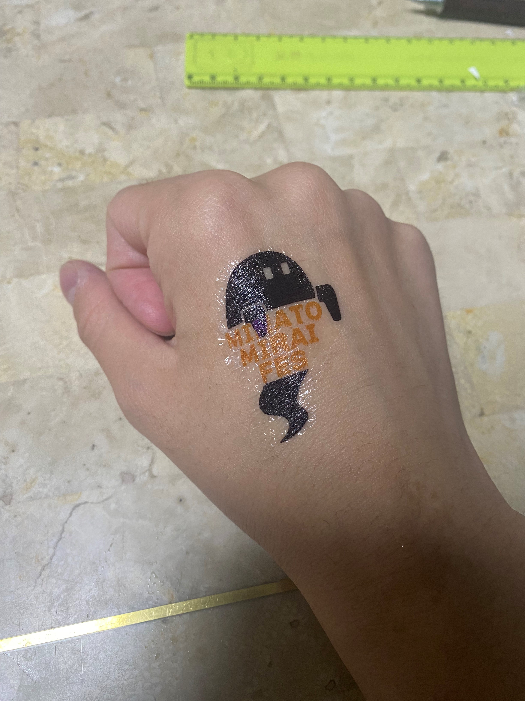
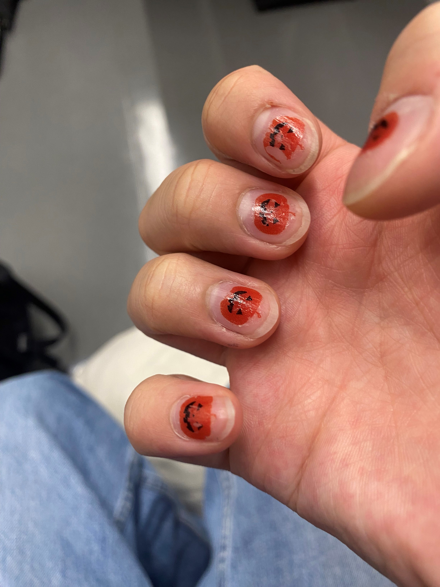
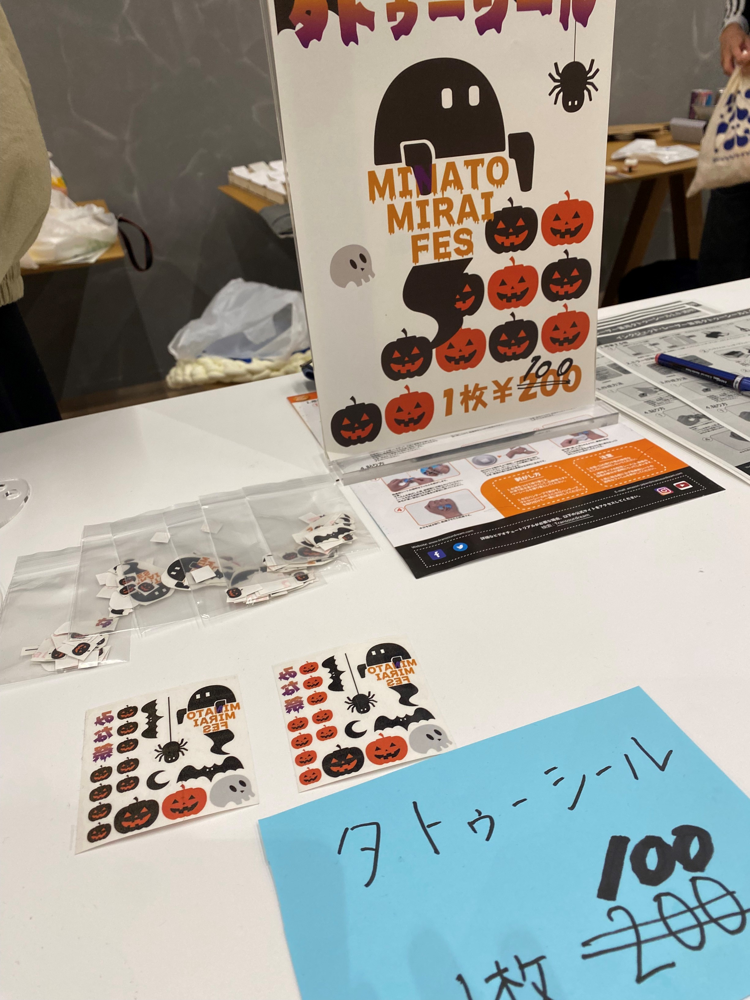
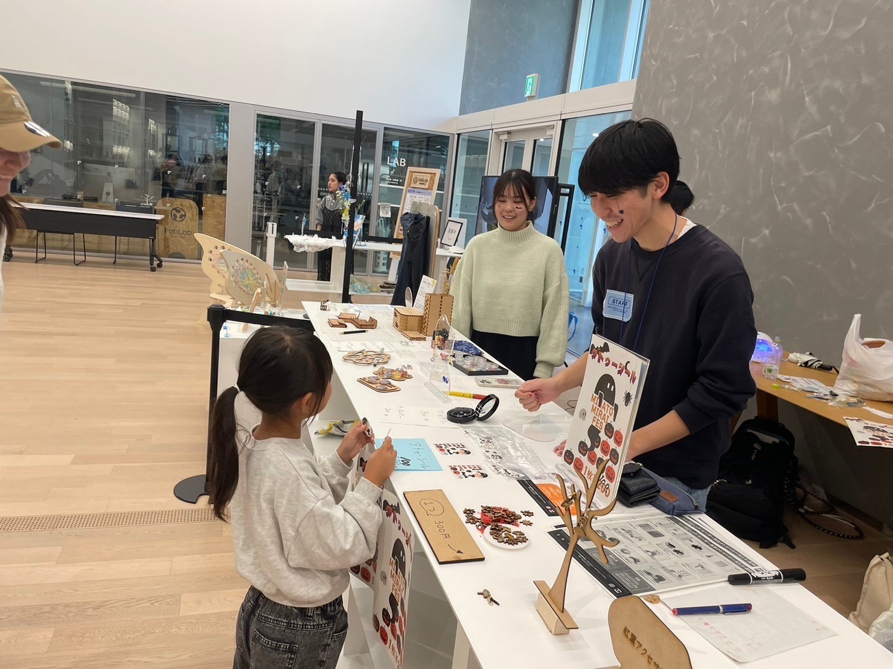
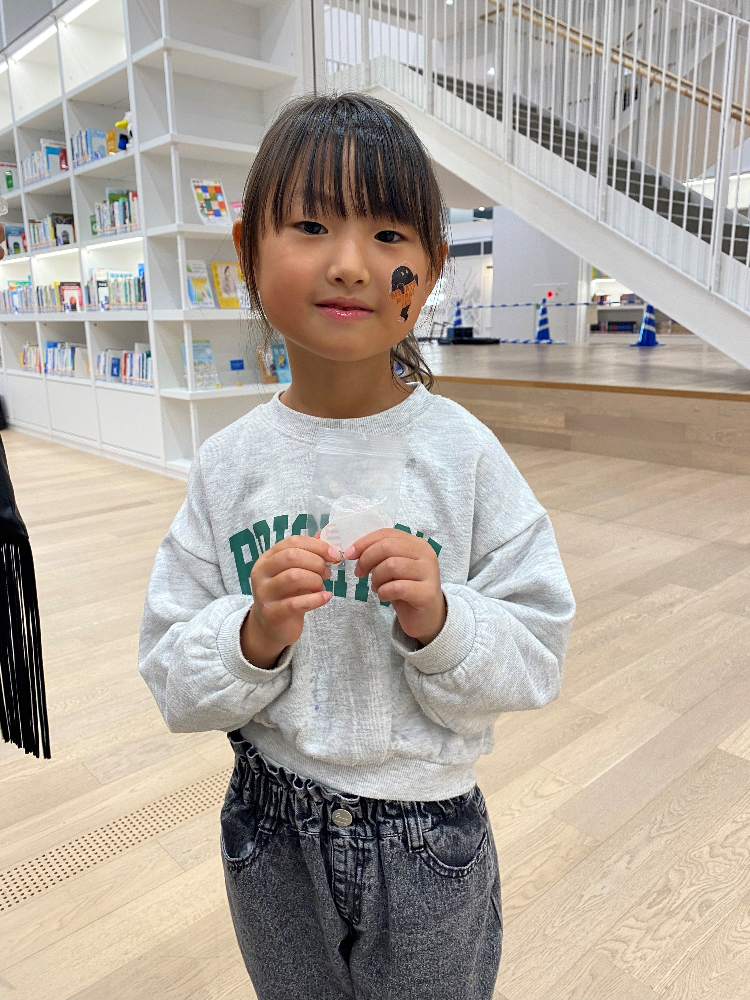
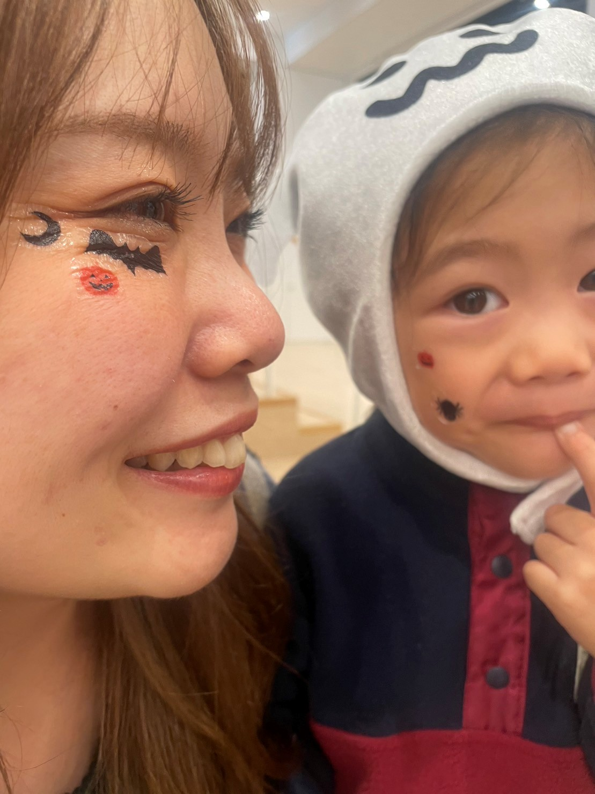
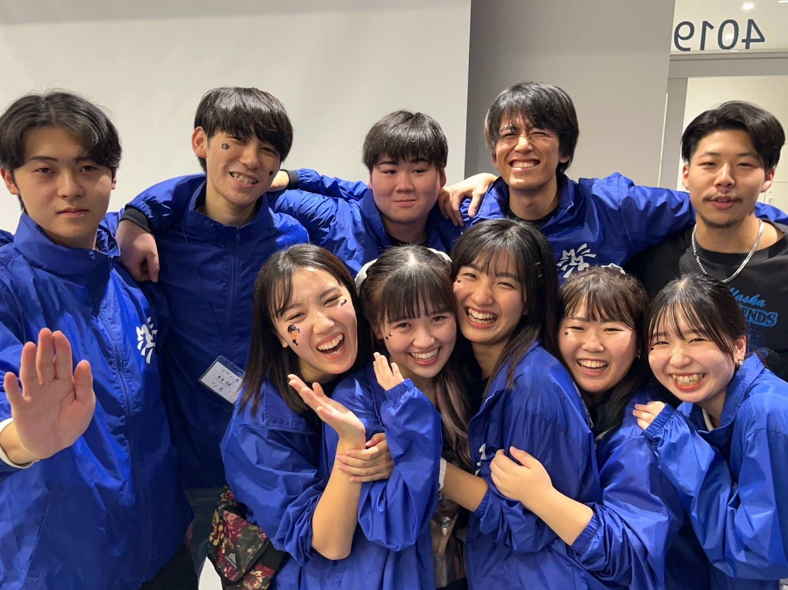
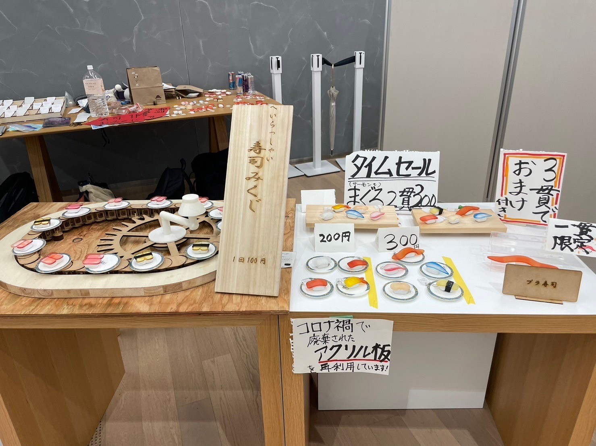

学祭当日

みんなお疲れさま！！
当日の様子
準備・設営


ちゃんとタトゥーシールが機能するかを確認。肌にも爪にもしっかりついた！

１日目はポスターがなく目をひかなかったのでポスターを追加。
シールを切り取って小さい袋に梱包して２００円で販売。
販売

ターゲットは高校生や大学生だったが、子供にも人気だった。
割合は半々程度で、学祭ではなく後日のハロウィンパーティーで使いたいという人もいた。
購入者の様子

親子ではったり、実行委員にも付けてもらった。
収益
経費：９８０円
１日目売上：２４００円
２日目売上：４２００円
学祭を終えて

今回の学祭を振り返ると自分の特徴が見えてきた。
まず自分の特徴は、デザインを通して人を楽しませる体験にベクトルが向いていること。
楽しい良いと思える体験を作るかどうかは自分の感情と強く結びついています。
そして今回１番衝撃だったのはプラ寿司の存在でした。
もともとおみくじだけを服部と２人で作る予定で、プラ寿司と合体してプロジェクトを作ることになった時、
それに共感しきれなかったので、自分は自分の作りたいものを作り、プラ寿司プロジェクトは３人より情熱を注いでいられなかった。
けど、自分も当日ストラップにして気分上がったし、自分が考えるより多くの人の共感を得ていて本当に衝撃うけた。
それに比べて、思っていたよりも自分の作ったものに共感してくれる人は狭く浅かった。
共感を深く広く得ていたプラ寿司は、多くの人に送るものづくりが難しいと感じた自分にとって考えさせられるプロジェクトだった。